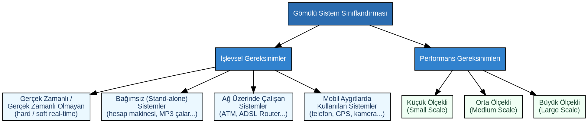
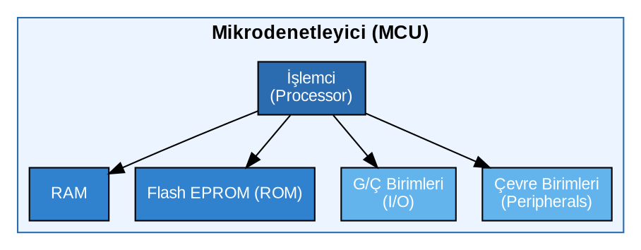
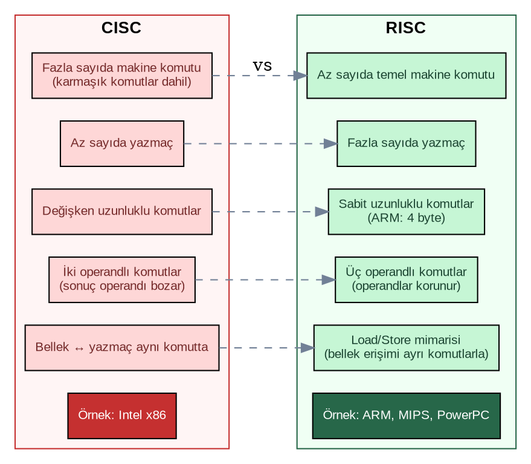
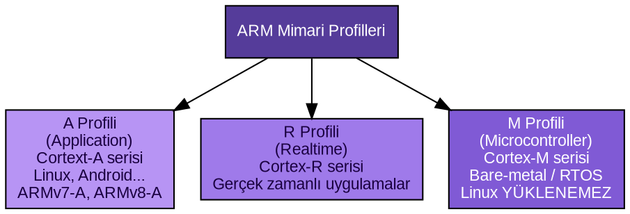
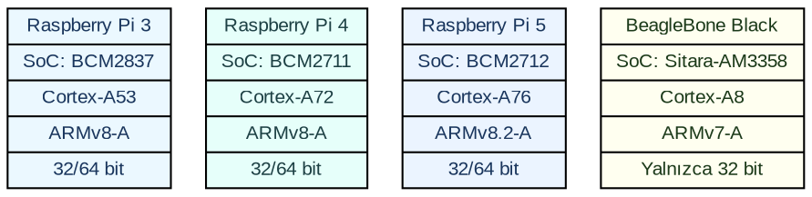

1. Giriş
Bu bölümde temel kavramlar tanıtılacaktır.
1.1. Gerekli Malzemeler
Kitaptaki uygulamaları gerçekleştirebilmek için gerekli olabilecek malzemeler şunlardır:
Raspberry Pi SBC (Single Board Computer): Version 3, 4 ya da 5 olabilir. Yeni satın alacakların Raspberry Pi 5 almalarını tavsiye ediyoruz.
Raspberry Pi 5 soğutucusu: Raspberry Pi 5 alınacaksa soğutucu ya da soğutuculu kılıf da alınmalı. Raspberry Pi 3 ve 4 için soğutucu alınmayabilir.
Micro SD Kart: Raspberry Pi için 64 GB yüksek hızlı micro SD kart tavsiye ediyoruz. 32 GB de olabilir. Ancak 32 GB’den düşüğü tavsiye etmiyoruz.
HDMI Kablosu: Raspberry Pi 4 ve Raspberry Pi 5 için Micro HDMI -> HDMI Kablosu, Raspberry Pi 3 için HDMI -> HDMI Kablosu. Biz kursumuzda Raspberry Pi 5 kullanacağız.
USB Kombo Klavye + Mouse
GPIO Breadboard Aktarma Kablosu: Raspberry Pi için.
Güç Kaynağı Adaptörü: Raspberry Pi 3 ve 4 için 5V/3A, Raspberry Pi 5 için 5V/5A (27W). Raspberry Pi 4 ve 5 USB Type C kullanıyor. Raspberry Pi 3 Micro USB kablosu kullanıyor.
BeagleBone Black SBC (Single Board Computer): Yeni satın alacak olanlar BeagleBone Black 4G, BeagleBone Black Wireless ya da BeagleBone Black Industrial alabilirler. Stokları kontrol etmek gerekiyor. Biz kursumuzda BeagleBone Black Industrial kullanacağız.
BeagleBone Black Güç Kaynağı: Mini USB ile 5V/500mA güç adaptörü ya da yuvarlak girişli (DC Jack) 5V/1A güç adaptörü. Ancak BeagleBone Black USB kablo ile PC’den de güç alabilmektedir.
BeagleBone Black Micro SD Kartı: 16 GB olabilir.
BeagleBone Black HDMI Dönüştürücü: Micro HDMI -> HDMI dönüştürücü.
Breadboard: Standart boy breadboard ve isteğe bağlı küçük boy breadboard’lar da olabilir.
Jumper Kablo Seti
USB -> UART Dönüştürücü: CP2102 çevirici modül olabilir.
DS3231 RTC Modülü
USB Uzatma Kablosu: Gerekebilir.
Ethernet RJ45 Kablosu: Eğer SBC’nin wireless özelliği varsa buna gerek duymayabilirsiniz.
1.2. Gömülü Sistemlere Giriş
Asıl amacı bilgisayar olmayan fakat bilgisayar devresi içeren sistemlere genel olarak gömülü sistemler (embedded systems) denilmektedir. Yani gömülü sistemler başka amaçları gerçekleştirmek için tasarlanmış olan aygıtların içerisindeki bilgisayar sistemleridir. Örneğin elektronik tartılar, biyomedikal aygıtlar, GPS cihazları, turnike geçiş sistemleri (validatörler), müzik kutuları, kapı güvenlik aygıtları, otomobiller içerisindeki kontrol panelleri birer gömülü sistemdir. Gömülü sistemlerde en çok kullanılan programlama dili C’dir. Ancak genel amaçlı işletim sistemlerinin yüklenebildiği SBC’lerde (Single Board Computer) diğer programlama dilleri de kullanılabilmektedir.
Gömülü sistemler gömüldüğü aygıtta belli işlevleri sağlamak için kullanılmaktadır. Örneğin buzdolaplarının, çamaşır makinelerinin içerisine yerleştirilen bilgisayar devreleri ve yazılımlar onların önemli etkinliklerini yönetmekte, kullanıcı ile arayüz oluşturabilmektedir. Günümüzde bilgisayar sistemi içeren aygıtlar artık her yeri sarmıştır. Bu nedenle gömülü sistemler üzerinde geliştirme faaliyetleri de önemli bir iş alanı haline gelmiştir.
1.2.1. Gömülü Sistemlerin Tipik Özellikleri
- Belirli amaca yönelik işlemler:
Gömülü sistemler “genel değil belirli (specific) amaca yönelik” işlemleri gerçekleştirmektedir. Yani genel amaçlı değil, özel amaçlı donanım ve yazılım hizmeti sunmaktadır. Bu sistemlerdeki yazılımlar da genel amaçlı değil, belli bir amacı gerçekleştirmeyi hedeflemektedir.
- Düşük bilgi işlem kapasitesi:
Gömülü sistemler genellikle daha düşük bir bilgi işlem kapasitesine sahip bilgisayar devreleridir. Örneğin bu sistemlerde kullanılan işlemciler genel amaçlı masaüstü işlemcilerden genellikle daha yavaş olma eğilimindedir. Bu sistemlerdeki bellek miktarları (birincil ve ikinci bellekler) genel amaçlı bilgisayar sistemlerine göre daha düşük olma eğilimindedir. Dolayısıyla gömülü sistemlerin maliyetleri de genel amaçlı bilgisayar sistemlerine göre oldukça düşüktür.
- Düşük güç harcaması:
Gömülü sistemler genellikle (fakat her zaman değil) daha düşük güç harcamaktadır. Bu durum onların bataryalarla beslenebilmesini dolayısıyla fiziksel taşınabilirliğini de artırmaktadır. Tabii genel olarak gömülü sistemler düşük güç harcama eğiliminde olan sistemler olsalar da bu durum her zaman böyle olmak zorunda değildir. Bazı gömülü sistemlerin gömüldüğü sistemlerde bir güç kullanma sorunu yoktur. (Örneğin araba kantarı zaten bu işlevi gerçekleştirmek için önemli bir güç harcamaktadır. Dolayısıyla bu sistemdeki gömülü sistemin harcadığı gücün önemi olmayabilir.)
- Gerçek zamanlı olaylar:
Gömülü sistemlerin önemli bir bölümü gerçek zamanlı (real time) olaylarla ilişkilidir. Bu sistemlerin belli bir bölümü dış dünyadaki değişimlere karşı bir yanıt oluşturmaya çalışmaktadır. Örneğin bir gömülü sistem ortamdaki ısı belli bir kritik düzeye geldiğinde bir işlemi başlatabilir. Ya da bir gömülü sistem kalp ritmi bozulduğunda kalbe uyarılar göndererek ritim bozukluğunu düzeltmeye çalışabilir. Hava araçlarındaki gömülü sistemler o anki hava şartlarına göre bir otomatik kumanda sistemi işlevini görüyor olabilir. Tabii gömülü sistemlerin bu gerçek zamanlı işlem doğası bazı uygulamalarda çok katı (hard realtime) olurken bazı uygulamalarda daha gevşek (soft realtime) olabilmektedir.
- Minimal kullanıcı arayüzü:
Gömülü sistemlerin bazılarında hiç girdi/çıktı birimi olmayabilir. Bazılarında ise girdi/çıktı birimi olarak düğmeler, basit tuş takımları, küçük LCD’ler olabilir. Oysa genel amaçlı bilgisayar sistemlerinde genellikle girdi/çıktı birimi olarak klavye, fare ve gelişmiş monitörler kullanılmaktadır. Başka bir deyişle gömülü sistemler kullanıcı arayüzü bakımından minimal olma eğilimindedir.
- Ucuz donanım:
Gömülü sistemlerdeki donanım birimleri nispeten ucuz olma eğilimindedir. Genel amaçlı bilgisayarlara göre bunlar çok daha ucuz olarak temin edilebilmektedir.
1.2.2. Gömülü Sistem Sınıflandırması
Gömülü sistemler işlevsel gereksinimlere göre ve performans gereksinimlerine göre de sınıflandırılabilmektedir:
{kind=link}

Gömülü sistem sınıflandırma şeması
1) İşlevsel Gereksinimlere Göre Sınıflandırma:
Gerçek Zamanlı Olan ya da Gerçek Zamanlı Olmayan Gömülü Sistemler: Bunlar hard ya da soft real-time olabilmektedir.
Bağımsız (Stand-alone) Olan ya da Bağımsız Olmayan Sistemler. Örneğin hesap makineleri, kapı güvenlik sistemleri, MP3 çalarlar gibi.
Ağ (Network) Üzerinde İşlem Yapan Gömülü Sistemler: Bunlar ağ işlemleri yapmak için oluşturulmuş gömülü sistemlerdir. ATM makinelerini, ADSL Router gibi aygıtları bunlara örnek verebiliriz.
Mobil Aygıtlarda Kullanılan Gömülü Sistemler: Bunlar küçük, taşınabilir aygıtlarda kullanılan gömülü sistemlerdir. Telefonlar, GPS cihazları, dijital kameralar bunlara örnek verilebilir.
2) Performans Gereksinimlerine Göre Sınıflandırma:
Küçük Ölçekli (Small Scale) Gömülü Sistemler
Orta Ölçekli (Medium Scale) Gömülü Sistemler
Büyük Ölçekli (Large Scale) Gömülü Sistemler
Biz burada https://www.ultralibrarian.com/2022/06/28/types-of-embedded-systems-characteristics-classifications-ulc adresindeki sınıflandırmayı kullandık. Ancak başka kaynaklarda başka türlü sınıflandırmalar da yapılabilmektedir.
1.2.3. Gömülü Sistemlerde İşlem Birimleri
Gömülü sistem yazılımlarının önemli bir bölümü bir işletim sistemi olmadan çalışacak biçimde (bare-metal) olarak geliştirilmektedir. Bunun önemli nedenlerinden biri bunların kapasitelerinin nispeten düşük olması diğeri de belirli bir amacı gerçekleştirecek biçimde tasarlanmış olmalarıdır. Gömülü sistemlerin bir bölümünde gerçek zamanlı işletim sistemleri bir bölümünde ise genel amaçlı işletim sistemleri kullanılmaktadır.
Gömülü sistemlerde genel olarak üç işlem birimi kullanılmaktadır:
Mikrodenetleyiciler
Mikroişlemciler
DSP’ler
1.3. Mikroişlemci (CPU)
Bir bilgisayar sisteminde aritmetik, mantıksal, bitsel işlemler ve karşılaştırma gibi bilgi işlem faaliyetleri mikroişlemci (microprocessor) denilen birim tarafından yapılmaktadır. Mikroişlemciler entegre devre biçiminde üretilmişlerdir. Mikroişlemcilere kavramsal olarak CPU (Central Processing Unit) de denilmektedir. Aslında genel amaçlı bir bilgisayar sisteminde komut çalıştıran pek çok işlemci bulunabilmektedir. CPU bu işlemcileri de programlayan merkezi (central) işlemcidir. Bilgisayar sisteminde yerel bazı işlemlerden sorumlu yardımcı işlemciler de vardır. Örneğin kesme denetleyicisi (interrupt controller), disk denetleyicisi (disk controller), DMA denetleyicisi (DMA controller) gibi.
1.4. Mikrodenetleyici (MCU)
Mikrodenetleyiciler tek bir chip içerisine yerleştirilmiş bir bilgisayar sistemi gibi düşünülebilirler. Tipik olarak bir mikrodenetleyicide bir işlemci (processor), kendi içerisinde RAM ve Flash EPROM, dış dünya ile haberleşmek için kullanılan Giriş/Çıkış (IO) birimleri ve bazı çevre birimleri (peripherals) bulunmaktadır. Mikrodenetleyicilere İngilizce Microcontroller ya da Microcontroller Unit (MCU) da denilmektedir.
{kind=link}

Tipik bir mikrodenetleyicinin iç yapısı
Mikrodenetleyicilerin işlem kapasiteleri ve içerdikleri bellek miktarları düşük olma eğilimindedir. Ancak bunlar çok kolay programlanıp uygulamaya sokulabilmektedir. Mikrodenetleyicilere tek çiplik bilgisayar (single chip computer) da denilmektedir. Mikrodenetleyiciler özellikle gömülü sistemlerde tercih edilmektedir. Bunların düşük güç harcaması ve ucuz olmaları en büyük avantajlarındandır. Gömülü uygulamalarda kullanılan pek çok mikrodenetleyici ailesi vardır. Örneğin:
Microchip PIC Mikrodenetleyici Ailesi (Microchip)
Renesas Mikrodenetleyici Ailesi (Renesas)
ARM Mikrodenetleyici Ailesi (Tasarımcısı ARM Holding, ancak çok çeşitli firmalar tarafından üretiliyor)
AVR Mikrodenetleyici Ailesi (Atmel, ancak Atmel firması 2016’da Microchip tarafından satın alındı)
MSP Mikrodenetleyici Ailesi (Texas Instruments)
1.5. SoC (System on Chip)
Bazı firmalar ayrı birimler olarak tasarlanmış mikroişlemcileri, RAM’leri, ROM’ları ve diğer bazı çevre birimlerini tek bir entegre devrenin içerisine sıkıştırmaktadır. Bunlara genel olarak SoC (System on Chip) denilmektedir. SoC mikrodenetleyicilere benzese de aslında onlardan farklıdır. SoC’lar içerisindeki işlemcilerin ve belleklerin kapasiteleri yüksektir. Bunlar özel amaçlı üretilirler ve bunların devrelerde kullanılmaları mikrodenetleyiciler kadar kolay değildir. Bunların en önemli avantajları az yer kaplamasıdır. Örneğin Raspberry Pi kitlerinde Broadcom isimli firmanın 2835, 2836, 2837, 2711, 2712 numaralı SoC çipleri kullanılmıştır. SoC’ların RAM ve ROM bellek içermesi zorunlu değildir. Bazı SoC’lar RAM içerirken bazıları içermeyebilmektedir. Örneğin Raspberry Pi 1, 2, 3 modellerinde kullanılan SoC’lar RAM içerirken Raspberry Pi 4 ve 5 modellerinde kullanılan SoC’lar RAM içermemektedir.
1.6. SoM (System on Module)
SoC kavramına benzer diğer bir kavram da SoM (System on Module) kavramıdır. SoM bir işlemci ve onunla ilişkili bazı birimlerin monte edildiği kartları belirtmek için kullanılmaktadır. SoM’lar SoC’ları içerebilir. Ancak başka birimleri de içerebilir. Örneğin bir SoM bir işlemci, buna ilişkin RAM, IO denetleyicisi (IO controllers) içeren bir kart olabilir. Örneğin Raspberry Pi Pico ve Raspberry Pi Compute Module birer SBC’den ziyade birer SoM olarak ele alınabilir. SoM kavramını zihninizde SoC ile SBC arasında bir yerde konumlandırabilirsiniz. SoM terimine yakın başka bir kavram da modül (module) kavramıdır. Modül bir kart üzerine yerleştirilmiş çeşitli bileşenlerden oluşan devrelere denilmektedir. Örneğin bir RTC kartına RTC modülü ya da bir GPS kartına GPS modülü de denilmektedir.
1.7. SBC (Single Board Computer)
Küçük bir kit (baskılı devre) üzerine monte edilmiş bilgisayarlara SBC (Single Board Computer) denilmektedir. Genellikle bu kitlerde SoC’lar, RAM’ler, başka çevre birimleri ve IO işlemleri için uçlar bulunmaktadır. Örneğin Raspberry Pi’lar, Beagleboard’lar SBC’lere örnek verilebilir. SBC’ler klavye, fare ve monitör takılarak bir masaüstü bilgisayar gibi kullanılabilmektedir. SBC’ler masaüstü bilgisayarlar gibi de kullanılabildiğinden bunlara Linux başta olmak üzere, Android ve Windows gibi işletim sistemleri yüklenebilmektedir.
1.8. CISC ve RISC İşlemci Mimarileri
Mikroişlemcileri tasarım mimarilerine göre CISC (Complex Instruction Set Computers) ve RISC (Reduced Instruction Set Computers) olmak üzere iki kısma ayırabiliriz. CISC ailesi işlemcilere Intel firmasının x86 ailesi işlemcilerini örnek verebiliriz. ARM, MIPS, PowerPC, Itanium gibi işlemciler ise tipik RISC işlemcileridir. Her ne kadar CISC ve RISC isimleri komut kümesi ile ilgili biçimde uydurulmuşsa da CISC ve RISC tasarımları başka bakımlardan da farklılık göstermektedir.
Önceleri işlemcilerin (makro ve mikro) fazla sayıda makine komutuna sahip olması bir avantaj olarak görülüyordu. Ancak daha sonraları bunun avantajdan ziyade dezavantaj oluşturduğu anlaşıldı. Belli bir süreden sonra artık RISC mimarisinin CISC mimarisinden toplamda daha iyi bir tasarım olduğu kabul görmüştür. Bu nedenle son dönem mikroişlemci tasarımlarında hep RISC mimarisi kullanılmıştır.
{kind=link}

CISC ve RISC mimari karşılaştırması
1.8.1. CISC ve RISC Arasındaki Temel Farklılıklar
- 1) Komut sayısı ve karmaşıklığı:
CISC işlemcilerinde fazla sayıda makine komutu bulunmaktadır. Bu işlemcilerde bazı komutlar temel işlemleri yaparken bazıları karmaşık işlemler yapmaktadır. Halbuki RISC işlemcilerinde az sayıda temel makine komutları bulunmaktadır. Bu makine komutları da daha fazla transistör kullanılarak daha hızlı çalışacak biçime getirilmiştir. Dolayısıyla CISC işlemcilerindeki bazı komutlar RISC işlemcilerinde birkaç komutla karşılanabilmektedir. Ancak bu durum sanıldığının tersine daha hızlı bir çalışma sağlama potansiyelindedir.
- 2) Yazmaç (register) sayısı:
CISC işlemcilerinde az sayıda yazmaç (register), RISC işlemcilerinde ise fazla sayıda yazmaç bulunma eğilimindedir. Yazmaç sayıları az olunca yazmaçların tekrar tekrar aynı değerlerle yüklenmesi gerekebilmektedir. Bu da derleyicinin nesneleri daha kısa sürede yazmaçlarda tutmasına yol açmaktadır. Yine CISC işlemcilerindeki bazı komutlar ancak bazı özel yazmaçlarla kullanılmaktadır. (Örneğin Intel x86 işlemcilerinde MUL ve DIV komutlarının bir operandı EAX ya da RAX yazmacında bulunmak zorundadır.) Oysa RISC işlemcilerinde her işlem her yazmaçla yapılabilmektedir.
- 3) Komut uzunlukları:
CISC işlemcilerinde komutlar farklı uzunluklarda olabilmektedir. Örneğin Intel’in x86 ailesinde 1 byte olan makine komutları da vardır, 5 byte olan makine komutları da vardır, 11 byte olan hatta 15 byte olan makine komutları da vardır. Halbuki RISC işlemcilerinde genel olarak tüm makine komutları eşit uzunluktadır. Örneğin ARM işlemcilerinde her makine komutu 4 byte uzunluktadır. Böylece işlemci komutları bellekten daha etkin bir biçimde çekip (fetch işlemi) onları daha çabuk anlamlandırmaktadır. Belli bir sayı sonraki ya da önceki makine komutlarının yerini belirleyebilmektedir.
- 4) Pipeline mekanizması:
RISC işlemcilerinde pipeline mekanizması CISC işlemcilerine göre daha iyi gerçekleştirilmektedir. Pipeline işlemcinin bir makine komutunu çalıştırırken sonraki komutlar üzerinde hazırlık işlemlerini yapması anlamına gelmektedir. RISC tasarımı pipeline mekanizmasının daha iyi yürütülmesine olanak sağlamaktadır.
- 5) Load/Store mimarisi:
RISC işlemcileri load/store tarzı makine komutları kullanmaktadır. Bu işlemcilerde belleğe erişim yapan makine komutlarıyla aritmetik, mantıksal ve bitsel işlem yapan makine komutları birbirinden ayrılmıştır. Örneğin RISC işlemcilerinde ADD, SUB gibi makine komutlarının her iki operandı da yazmaç olmak zorundadır. Halbuki CISC işlemcilerinde bu tür makine komutlarının bir operandı yazmaç bir operandı bellek olabilmektedir. Örneğin:
a = b + c;
gibi bir işlem CISC işlemcisi ile şu makine komutlarıyla yapılabilmektedir:
b’yi yazmaca çeken makine komutu
Yazmaçtaki b ile bellekteki c’yi toplayan makine komutu
Yazmaçtaki toplamı a’ya yerleştiren makine komutu
Oysa aynı işlem RISC işlemcilerinde şöyle gerçekleştirilmektedir:
b’yi yazmaca çeken makine komutu
c’yi yazmaca çeken makine komutu
Yazmaçlardaki b ile c’yi toplayan makine komutu
Yazmaçtaki sonucu a’ya yerleştiren makine komutu
Belleğe erişim komutlarıyla diğer komutların birbirinden ayrıldığı işlemcilere load/store işlemciler ya da register-register işlemciler de denilmektedir.
- 6) Operand sayısı:
RISC işlemcileri genel olarak (ancak hepsi değil) üç operandlı makine komutlarını kullanmaktadır. Oysa CISC işlemcileri genellikle iki operandlı makine komutlarını kullanır. İki operandlı makine komutlarında işlemin sonucu operand olan yazmaçlardan birine yerleştirildiği için o yazmaç bozulmaktadır. Böylece derleyici o yazmaçtaki değeri yeniden kullanmak istediğinde onu yeniden yüklemek zorunda kalmaktadır. Örneğin
a = b + cişlemi 32 bit Intel işlemcilerinde tipik olarak şöyle gerçekleştirilmektedir:MOV EAX, <a'nın adresi> ADD EAX, <b'nin adresi> MOV <c'nin adresi>, EAX
Burada EAX işlemcinin bir yazmacıdır. ADD makine komutu bu yazmaçtaki değer ile bellekteki b’yi toplamakta ve sonucu yine EAX yazmacına yerleştirmektedir. Dolayısıyla EAX yazmacındaki a değeri artık kaybolacaktır. Bu değer yeniden kullanılmak istendiğinde ise yeniden yüklemenin yapılması gerekecektir. Şimdi aynı işlemi ARM işlemcilerinde yapacak olalım:
LDR R0, <a'nın bellek adresi> LDR R1, <b'nin bellek adresi> ADD R2, R1, R0 STR R2, <c'nin bellek adresi>
Burada R0, R1 ve R2 işlemcinin yazmaçlarıdır. Görüldüğü gibi ARM işlemcilerinde load/store komutları dışındaki komutlar üç operandlıdır. Bu da yazmaçlardaki değerlerin gerektiğinde bozulmamasına yol açmaktadır.
- 7) Güç tüketimi:
RISC işlemcileri yukarıda belirttiğimiz tasarım prensiplerinden dolayı toplamda daha az güç harcama eğilimindedir. Bu da onların mobil aygıtlarda kullanılmasının önemli bir gerekçesini oluşturmaktadır.
- 8) Komut çalışma süreleri:
RISC işlemcilerinde makine komutlarının çalışma süreleri birbirine yakındır. Ancak CISC işlemcilerinde makine komutlarının çalışma süreleri arasında önemli farklılıklar olabilmektedir. Örneğin ARM işlemcilerinde toplama, çıkartma, çarpma gibi makine komutları 1 cycle’da yapılmaktadır. Ancak load/store komutlarının, jump komutlarının ve özel bazı komutların çalışma süreleri 1 cycle’dan fazla olabilmektedir. Oysa örneğin Intel x86 işlemcilerinde komut süreleri değişik faktörlere bağlı olarak birbirinden çok farklılaşmaktadır.
RISC ve CISC mimarilerini bir spektrum olarak düşünmek gerekir. Örneğin MIPS işlemcileri ARM işlemcilerine göre bu spektrumun daha fazla RISC tarafındadır. Intel’in x86 işlemcilerini kategori olarak CISC grubu işlemciler olarak ele alsak da Pentium işlemcileri ile birlikte bu işlemcilerde de RISC prensipleri gittikçe daha fazla kullanılır hale gelmiştir.
1.9. ARM İşlemcileri
1.9.1. ARM’ın Tarihçesi
ARM işlemcilerinin tarihi Acorn Computer isimli İngiliz firmasına dayanmaktadır. Bu firma 80’li yılların başlarında BBC Micro isimli 64K’lık ev bilgisayarlarını yapmıştı. Bu bilgisayarlarda Rockwell’in 8 bitlik 6502 işlemcileri kullanılıyordu. Firma daha sonra Berkeley RISC projesinden etkilenerek kendi RISC işlemcilerini yapmaya odaklandı. Böylece ilk ARM modelleri tasarlanmış oldu. Şirket 1990’da Apple ve VLSI Technology şirketleriyle ortaklıklar da kurarak ARM ismini aldı. (Eskiden ARM Acorn RISC Machine isminden kısaltılıyordu. Fakat daha sonra bu firma kurulunca bu kısaltma Advanced RISC Machine haline getirildi.) Apple firması bu yeni firmaya maddi destek sağlamıştır. VLSI Technology firması ise ekipman tedarik etmiştir. Acorn ise az sayıda tasarım mühendisini bu yeni firmaya aktarmıştır. 2016 yılında SoftBank Group ARM hisselerinin önemli bir bölümünü aldı. 2018’de ARM’ın Çin şubesinin yarısından fazlasını Chine Investment şirketine sattı. 2020’de NVidia, ARM’ı SoftBank Group’tan satın almak istediyse de satış gerçekleşmedi. Bugün SoftBank Group ARM’ın %90 civarındaki hisselerine sahiptir. Geri kalan hisseleri kurucu ortaklarda ve halka arzdadır.
1.9.2. ARM Lisans Türleri
ARM (İngilizce’de de ey ar em biçiminde değil arm biçiminde okuyorlar) bir tasarım firmasıdır. Yani fabrikalara sahip değildir. ARM yaptığı tasarımları lisanslandırarak üretici firmalara satmaktadır. ARM’ın uyguladığı dört tür lisans vardır:
- Entegre Devre Lisansı (Full Custom License):
Bu lisans müşterinin mikrodenetleyici tasarımını kendi özel ihtiyaçlarına göre özelleştirmesine ve optimize etmesine olanak tanır. Örneğin Apple gibi, Qualcomm gibi, Samsung gibi firmalar bu lisansa sahiptir.
- Mimari Lisans (Architecture License):
Bu lisans ARM’nin genel mikroişlemci mimarisine erişim sağlayan lisanstır. Ancak bu lisans müşterinin mikrodenetleyiciyi özelleştirmesine izin vermez. Yani bu lisansa sahip olanlar işlemci tasarımını kullanarak üretim yapabilirler ancak onu özelleştiremezler.
- Çekirdek Lisansı (Processor IP License):
Bu lisans ile müşteri yalnızca belli bir ARM işlemcisini (core) üretebilmektedir.
- Geliştirici Lisansı (Development License):
Bu lisans ARM’nin tasarım araçlarına erişim sağlayan bir lisanstır. Müşteri bu araçları kullanarak kendi işlemcilerini tasarlayabilir.
1.9.3. ARM Terminolojisi: Core, Cortex ve Versiyon
ARM dünyasında çalışmak için bazı terimler hakkında bilgi sahibi olmak gerekir. ARM firması kendine özgü terimler uydurmuştur. Bu dünyada en çok karşılaşılan terimler core, cortex ve version terimleridir.
ARM dünyasında core terimi belli bir mikroişlemci tasarımını belirtmektedir. Bu tasarım üretici firmalar tarafından fiziksel hale getirilmektedir. Bir grup core bir araya getirildiğinde ve işlemciyle ilişkili birtakım birimler de bunlara eklendiğinde cortex’ler oluşmaktadır. ARM firması ARM’ın klasik versiyonlarında cortex terimini kullanmamıştır. Cortex terimi ARM11’den sonra kullanılmaya başlanmıştır. Bir cortex belli sayıda core içerebilir. Bu core’lar noktalı sayılara (floating point) ilişkin işlem yapan birimlere sahip olabilirler. Cortex içerisindeki core’ların belli hızları vardır. Core ve cortex terimleri daha çok çip düzeyindeki mimariyi belirtmektedir. Cortex’lerdeki işlemcilerin (core’ların) sistem programcısını ilgilendiren komut kümeleri (instruction sets) de vardır. Böylece bir grup cortex belli bir komut kümesi ile kullanılabilecek biçimde tasarlanmıştır. Komut kümesi mimarisine ARM Versiyonları ya da İngilizcesiyle ARM ISA (Instruction Set Architecture) denilmektedir. Biz sistem programcısı olarak elimizdeki cortex’in hangi komut kümesini kullanan ARM versiyonuna ilişkin olduğunu bilmek durumundayız. Burada dikkat edilmesi gereken nokta Cortex teriminin donanımsal mimariyi, versiyonun ise yazılımsal mimariyi belirtiyor olmasıdır. O halde gömülü sistem geliştiricisi olarak bizim ilgilendiğimiz ARM içeren kart ile ilgili şu iki özelliği biliyor olmamız gerekir:
Kartımızda ARM’ın hangi cortex’i kullanılmıştır?
Bu cortex’in ilişkin olduğu versiyon numarası nedir?
Yukarıda da belirttiğimiz gibi farklı cortex’ler aynı versiyon numarasını kullanabilmektedir.
1.9.4. ARM Mimari Profilleri
ARM dünyasında üç mimari profili (profile) bulunmaktadır:
{kind=link}

ARM mimari profilleri
A (Application) Profili
R (Realtime) Profili
M (Microcontroller) Profili
Bu profiller ilgili cortex’lerin hangi tür uygulamalarda ideal olarak kullanılabileceğini
belirtmektedir. Profil isimleri cortex’lerde ve versiyon numaralarında - karakterinden sonra
A, R, M harfleriyle belirtilmektedir. Örneğin Cortex-A8 ve ARMv7-A gibi. A profilleri
masaüstü işletim sistemlerinin çalıştırılabileceği, tamamen kişisel bilgisayar olarak
kullanılabilecek cortex’leri belirtmektedir. Biz kursumuzda gömülü Linux programcısı olarak bu
A profilleriyle çalışacağız. R profilleri gerçek zamanlı (realtime) uygulamalar için daha
uygun olabilecek cortex’leri belirtmektedir. R profilleri A profillerine göre çok daha seyrek
kullanılmaktadır. M profilleri ARM’ın mikrodenetleyici olarak kullanılan cortex’lerini
belirtmektedir. Bu cortex’ler Linux işletim sisteminin yüklenmesine izin vermemektedir. Bu
cortex’ler genellikle bare-metal programlarla ya da gerçek zamanlı işletim sistemleriyle
kullanılmaktadır.
ARM’ın iki önemli versiyonu ARMv7-A ve ARMv8-A’dır. ARMv7’ler 32 bitlik bir arayüz sunmaktadır. Dolayısıyla bu komut mimarisini kullanan cortex’ler 32 bitlik işlemciler içermektedir. ARMv8-A versiyonları ise 64 bitlik arayüz sunmaktadır. Dolayısıyla bu versiyonları kullanan cortex’ler 64 bitlik işlemcilere ilişkindir. Ancak ARM cortex’lerinin bir grubu hem 32 bit hem de 64 bit olarak kullanılabilmektedir. Bu cortex’lerdeki işlemcileri kullanan işletim sistemleri 32 bitlik ve 64 bitlik programları zaman paylaşımlı olarak bir arada çalıştırabilmektedir.
1.10. İşlemcilerin Bit Genişliği
Mikroişlemciler ilk çıktığında 8 bit işlemleri yapabiliyordu (örneğin 8080, 6800 gibi işlemciler). Bunlara 8 bitlik mikroişlemci deniyordu. Sonra 16 bitlik mikroişlemciler çıktı (örneğin Intel’in 8086, 8088 işlemcileri gibi). Bunu 32 bit işlemciler izledi. Günümüzde artık ağırlıklı olarak 64 bit işlemciler kullanılmaktadır. Peki bir işlemcinin N bitlik olmasının anlamı nedir?
Tek hamlede işlem kapasitesi: N bitlik bir işlemcide tek hamlede (yani tek bir makine komutuyla) N bit üzerinde işlem yapılabilmektedir. Örneğin 32 bitlik bir mikroişlemcide tek bir makine komutu ile 32 bitlik iki sayıyı toplayıp çarpabiliriz.
Fiziksel RAM adresleme kapasitesi: N bitlik bir mikroişlemci genellikle (ama her zaman değil) 2N uzunlukta bir fiziksel RAM’i adresleyebilmektedir. Örneğin 32 bitlik bir mikroişlemciye biz tipik olarak 232 = 4 GB’lik bir RAM bağlayabiliriz. Elimizdeki RAM 64 GB olsa bile 32 bit bir mikroişlemci bu RAM’in ancak ilk 4 GB’sini kullanabilmektedir. Tabii bu durum her zaman böyle değildir. Örneğin 8086 işlemcisi 16 bit olduğu halde 216 değil 220 uzunluğunda (1 MB) fiziksel belleği adresleyebiliyordu. Benzer biçimde 64 bitlik Intel ve AMD işlemcileri 264 değil 248 uzunluğundaki RAM’leri adresleyebilmektedir.
CPU-RAM arası transfer genişliği: N bitlik bir mikroişlemcide genellikle işlemci ile RAM arasında transfer N bit olarak yapılmaktadır. Örneğin 32 bitlik bir mikroişlemcide tek bir makine komutuyla RAM’den CPU’ya 32 bitlik bir veri transfer edilebilir. Ancak bu durum her zaman böyle değildir. Örneğin 16 bitlik Intel 8086 işlemcisi bellek transferlerini 16 bit olarak yaparken 8088 işlemcisi 8 bit yapıyordu.
8 bitten 16 bite geçişte ve 16 bitten 32 bite geçişte çok fark edilir bir hızlanma yaşanmıştır. Ancak 32 bitten 64 bite geçişte hızlanma öncekiler kadar olmamıştır. Bunun nedeni 64 bitlik işlemlerin aslında yoğun olarak yapılmadığındandır. Ancak 32 bitten 64 bite geçişin en önemli etkisi işlemciye bağlanabilecek RAM miktarı üzerinde olmuştur. Örneğin elimizde 8 GB RAM’li Raspberry Pi 5 olsun. Buradaki ARM cortex’i hem 32 bit hem de 64 bit işlemci gibi çalışabilmektedir. Dolayısıyla biz bu kartımıza 32 bitlik de 64 bitlik de Linux yükleyebiliriz. Ancak 32 bitlik Linux işletim sistemi işlemciyi 32 bit modda çalıştıracağı için işletim sistemi 8 GB RAM’in ancak 4 GB’sini kullanabilecektir. Bu 8 GB RAM’in tamamından istifade edebilmemiz için işlemcinin 64 bit modunda çalıştırılması dolayısıyla da işletim sisteminin 64 bit olması gerekecektir.
Peki 128 bitlik işlemciler tasarlansa, bunlar daha hızlı bir çalışma sunmaz mı? Neden 128 bitlik işlemciler tasarlanmıyor? 128 bitlik tamsayı işlemlerine çok nadir gereksinim duyulmaktadır. 2128 uzunluğunda RAM zaten şu an için erişilmesi imkânsız bir RAM miktarıdır. O halde işlemcilerin 64 bitten 128 bite çıkartılmasının şu an için önemli bir faydası olmayacaktır. Ancak tabii gelecekte böyle bir ihtiyaç ortaya çıkabilecektir.
1.11. Popüler Ürünlerde ARM Cortex’leri
Popüler ürünlerde kullanılan ARM cortex’leri şunlardır:
- iPhone 14:
Apple’ın A15 isimli SoC’unu kullanmaktadır. Bu SoC’un içerisinde Apple’ın ARMv8.6-A versiyonunu kullanan Avalanche Cortex’i vardır. Buradaki core’lar yalnızca 64 biti desteklemektedir.
- iPhone 15:
Apple’ın A16 isimli SoC’unu kullanmaktadır. Bu SoC’un içerisinde Apple’ın ARMv8.6-A versiyonunu kullanan Everest Cortex’i vardır. Buradaki core’lar yalnızca 64 biti desteklemektedir.
- Apple M1 SoC:
Apple’ın ARMv8.4-A versiyonunu kullanan FireStorm isimli Cortex’i vardır. Buradaki core’lar yalnızca 64 biti desteklemektedir.
- Apple M2 SoC:
Apple’ın ARMv8.6-A versiyonunu kullanan Avalanche ve Blizzard isimli Cortex’leri vardır. Buradaki core’lar yalnızca 64 biti desteklemektedir.
- Apple M3 SoC:
Apple’ın ARMv8.6-A versiyonunu kullanan Avalanche ve Blizzard isimli Cortex’leri vardır. Buradaki core’lar yalnızca 64 biti desteklemektedir.
- Samsung Galaxy S24:
Qualcomm firmasının Snapdragon-8 SoC’unu kullanmaktadır. Bu SoC içerisinde ARMv9-A versiyonunu kullanan Cortex A715 bulunmaktadır.
- Redmi Note 11:
Xiaomi firmasının ürünüdür. Qualcomm Snapdragon-685 SoC’unu kullanmaktadır. Bu SoC’un içerisinde ARMv8.2-A versiyonuna ilişkin Cortex A78 bulunmaktadır.
1.12. Kursumuzda Kullanılan SBC’lerin ARM Cortex’leri
Bu kursta kullanacağımız SBC’lerin üzerinde bulunan ARM cortex’leri ve bunların versiyon numaraları şöyledir:
{kind=link}

Kursumuzda kullanılan SBC’lerin ARM cortex karşılaştırması
- Raspberry Pi 3:
BCM2837 SoC’u kullanılmıştır. Bu SoC’un içerisinde ARMv8-A versiyonuna ilişkin Cortex-A53 bulunmaktadır. Bu cortex’teki işlemciler hem 32 bit hem de 64 bit modda çalışabilmektedir. Dolayısıyla bunlara 32 bit ve 64 bit Linux sistemleri yüklenebilmektedir.
- Raspberry Pi 4:
BCM2711 SoC kullanılmıştır. Bu SoC’un içerisinde ARMv8-A versiyonuna ilişkin Cortex-A72 bulunmaktadır. Bu cortex’teki işlemciler hem 32 bit hem de 64 bit modda çalışabilmektedir. Dolayısıyla bunlara 32 bit ve 64 bit Linux sistemleri yüklenebilmektedir.
- Raspberry Pi 5:
BCM2712 SoC kullanılmıştır. Bu SoC’un içerisinde ARMv8.2-A versiyonuna ilişkin Cortex-A76 bulunmaktadır. Bu cortex’teki işlemciler hem 32 bit hem de 64 bit modda çalışabilmektedir. Dolayısıyla bunlara 32 bit ve 64 bit Linux sistemleri yüklenebilmektedir.
- BeagleBone Black 4G ve BeagleBone Black Wireless:
Texas Instruments firmasının Sitara-AM3358 SoC’unu kullanmaktadır. Bu SoC’un içerisinde Cortex-A8 kullanılmıştır. Bu cortex 32 bit işlemcilerden oluşmaktadır. Bunların kullandığı komut mimarisi de ARMv7-A’dır. BeagleBone Black’ler 32 bit ARM işlemcilerini kullandığı için bunlara yalnızca 32 bit Linux sistemleri yüklenebilmektedir.